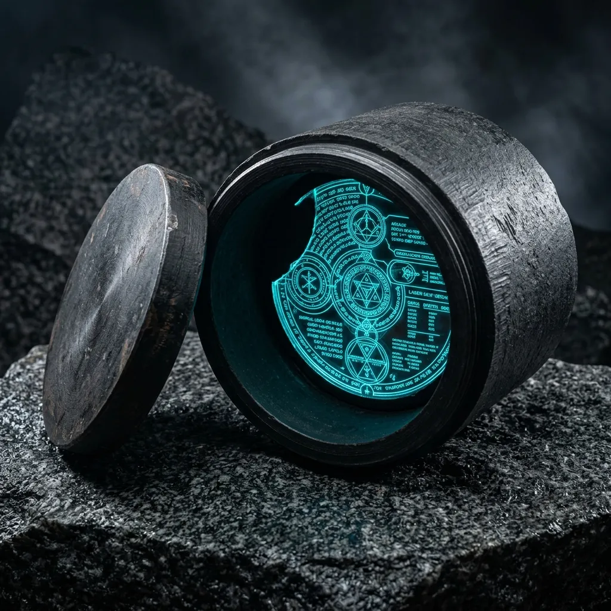
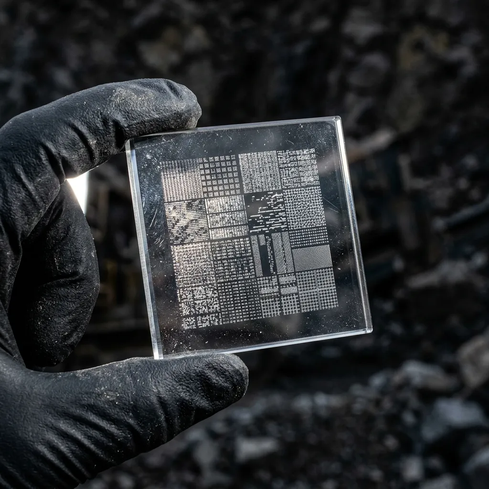

Physical Data Storage Engineered for Ten Thousand Years of Subterranean Burial.
Vitrified basalt canisters and quartz-etched optical slates built to survive ice ages, magnetic flips, and deep tectonic shifts.
Magnetic tape degrades in twenty years, solid-state drives lose charge in ten, and cloud servers require an uninterrupted industrial civilization just to keep their cooling fans spinning. When sovereign archive curators and extreme seed-bank teams need data to outlast our current geological epoch, they seal it in stone.
Operating out of the Upington granite quarries, we mill hermetic basalt canisters and laser-etch optical bitmaps onto pure synthetic quartz slates that remain pristine through ten millennia of subterranean pressure.
Why Bitmaps on Synthetic Quartz Beat Magnetic Media Every Time.
The fundamental trap of digital archiving is the assumption that future generations will possess the hardware controllers, software drivers, and electrical power needed to decode complex file systems. If a storage medium requires a proprietary microprocessor to read its contents, it is not an archive—it is a temporary hostage to technological continuity.
Our sub-lithic slates reject electronic dependency entirely. We engrave human-readable optical bitmaps and analog schematics directly into pure synthetic quartz crystals using femtosecond laser pulses, producing three-dimensional refractive voids that never decay.
To shield these quartz slates from subterranean groundwater, seismic crushing, and ambient gamma radiation, each unit is housed within a continuous-cast basalt canister. Machine-milled from dense Northern Cape olivine stone, the container is sealed using an indium wire gasket cold-welded under twenty tonnes of hydraulic pressure. Indium remains soft and self-healing under extreme temperature swings, preventing micro-fissures even if the surrounding rock strata shifts. When exhumed ten thousand years from today, a curator needs only a simple magnifying lens and a light source to recover every line of text, code, and diagram exactly as it was etched.
Archival Canister Models & Slate Specifications
LithoVault-10K Canister
Dense olivine basalt shell capable of withstanding colossal tectonic pressures. Features an indium cold-welded seal and massive wall thickness for gamma shielding. 5L internal volume capacity.
QuartzSlate-Micro
Constructed from 99.99% pure synthetic quartz. Carries up to 100GB of analogue bitmap capacity using dense 3D refractive index voids. Entirely immune to magnetic erasure and oxidation.
Indium Hydro-Gasket Kit
The heavy cold-welding installation apparatus required to permanently seal the basalt canister in the field prior to deep burial.

The 4-Stage Vitrification & Etch Cycle
Meticulous, scientific manufacturing that transforms raw mineral ores into impenetrable physical archives.
Optical Bitmap Conversion
Digital files, blueprints, and critical texts are transcoded into highly redundant microscopic analogue bitmaps, removing reliance on proprietary software drivers.
Femtosecond Quartz Laser Etching
Pulsed lasers sculpt 3D refractive index voids directly into the molecular lattice of the quartz slate, embedding the bitmaps permanently into the crystal structure.
Vacuum Argon Flushing & Indium Cold-Welding
The canister is flushed with inert argon gas before an indium wire gasket is cold-welded shut under extreme hydraulic pressure, forming a hermetic barrier.
Hydrostatic Crush & Gamma Shield Verification
Every finished vault is subjected to rigorous crush-depth simulations and radiological barrages to certify absolute data integrity prior to subterranean deployment.
Subterranean Environmental Proof Logs
Tested against the harshest geological conditions known to planetary science.
500 Bar Hydrostatic Crush Chamber
Submerged in high-pressure testing tanks simulating abyssal tectonic fault lines. Result: Zero fluid ingress detected across the indium gasket seal over a 90-day sustained load.
Thermal Shock Cycling
Rapid temperature fluctuation testing ranging from -80°C to +300°C to simulate surface climatic catastrophes. Result: The self-healing indium gasket maintained an absolute vacuum seal without micro-fissures.
Sub-Crustal Gamma Radiation Barrier
Bombarded with high-energy isotopes mimicking extended deep-time burial near active geological radiation sources. Result: Quartz matrix showed zero lattice degradation after 100,000 Gy exposure.
Initiate an Archival Vault Order
Direct procurement from our Upington quarry works. Built to custom volume specifications for institutional preservation teams.